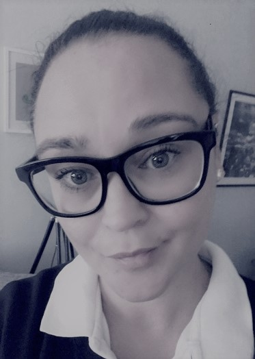

Butiksbiträde
KontaktInfoVildgåsvägen 11 c 22735 Lund 0708144645 sararados@hotmail.com19760623-3943 KompetensCertifierad i Svenskaspel Certifierad i ATG Certifierad i Postnord Sociala MedierSpråkSvenska & Engelska |

ProfilMitt namn är Sara Rados och bor i Lund,med sambo och våra två döttrar. På fritiden umgås jag med familjen, ritar och försöker hinna med träning nån gång då och då.. Jag är en social person som har lätt för att träffa nya människor, även lätt för att samarbeta då jag har jobbat mycket i grupp. Jag är oftast väldigt lugn men kan säga ifrån när det behövs. I Förbutiken så gäller det att kunna hantera stress, du måste se till så kunderna får lämnat in sina Spel i tid, se till så rätt kund får sitt paket, hantera tobaksförsäljning och hinna med dagens rutiner. Jag har alltid tyckt det var kul men nu vill jag pröva något annat, utmana mig själv och utvecklas. ArbetslivserfarenhetWillys 2002-Jag jobbar just nu på Willys i Lund. Jag började 2002 som kassörska, och nu jobbar jag i förbutiken. I förbutiken säljs Tobak och Spel, vi är även ombud för Postnord. Jag har varit Förbutiksansvarig, det innebar dels att göra schema, ringa in personal,beställning av tobak, ansvara för all personal i Förbutiken så de följde våra rutiner. Jag har även vikarierat som TeamChefKassa, då ansvarade jag för hela Kassalinjen och ordnade med schema, personal, anställningsintervjuer och mycket mer. Under dessa perioder satt jag även med i Ledningsgruppen, tillsammans med BC och de andra Teamcheferna. Jag har även jobbat på kontoret där jag har gjort kassaredovisningar, fakturor och rättat de anställdas arbetstider med mera. Postnord 1997-1998Jag jobbade på ett Postkontor i Lund. Arbetet innebar att ta hand om all post från kunder och sortera den och se till att det skickades iväg på kvällen. Jag har även jobbat lite som brevbärare och cyklat ut med post till olika områden.
Utbildning
|